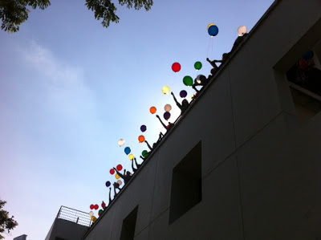

宽恕
这个周六下午，托福园举行数月一次的缅怀典礼，邀请病逝者的家属参加。 萧索的礼堂里摆着上百张椅子，中间开了一条通道，陆陆续续有人走进来坐下。小电子琴放在矮台右侧，我坐在琴后，台下一目了然。我的责任是在仪式开始前，弹奏一些适当的音乐，帮助与会者安定心绪。小电子琴的音色，浑厚不足，我只能选弹几首轻柔的歌曲。
台下大部分人都安静坐着，闭目沉思。这时，我注意到左侧有一名马来妇女，独自一人坐着，轻轻地饮泣。妇女大约五十来岁，微胖，头上包着素色围巾。莫非，这就是她？
我听过这样的一个故事。也许，这是许多类似故事的综合体。起头是这样的：一位年轻义工碰见一名悲伤的病人。病人是马来裔男子，只有二十来岁。病人鼻子里插着呼吸管，讲话带喘气。义工反复聆听，揣摩出病人所要说的是：我要跟我妈说对不起。
义工自告奋勇，想把他妈找出来。一着手，发现事情有些棘手。原来，病人和妈妈失联已超过十年。病人家里有四名兄弟姐妹，父亲做过保安快递等等工作，收入不稳定。一家六口，和姑姑的一家四口，挤在祖父祖母的三房组屋里。小小组屋，住着三家十二口，房里厅里都睡满了人。他从小就不爱读书，喜欢在组屋楼下蹓跶，和一伙人踢球、唱歌、闲荡。十四岁那年，开始翘课并接触毒品。在一次激烈争吵后，他一怒离家，从此在罪犯、黑社会、社会边沿间流走。
他离家后，家人都以他为耻，陆续断绝联络。只有妈妈，苦口婆心，一直盼望他回头。三年后，妈妈与爸爸离婚，带着小妹搬出，最后的连接纽带亦被切断。他并不在意。江湖潇洒，四海皆兄弟，亲情何价？
义工打开厚厚的电话簿，只要是有点蛛丝马迹的名字，都一一打去询问。他自然碰了不少钉子。待要放弃，记起对病人的承诺，便坚持下去。一直到 －－－
一个下午，病人的情况转坏了，气喘得更急。在黄昏的余光还没完全黯淡之前，一位中年妇女走入病房。病人愕然，然后与妇女相拥。两人欢喜，同时也哭泣。义工守在一角，然后静静走开。这一刻，属于母子二人。
接下来，母子常常相聚。妈妈替他庆祝生日，生平第一次买得起蛋糕。她的儿子，失而复得。三个星期后，得而复失。
此时，这位坐在角落饮泣的妇人，就是这位母亲？我不知道，也不想打扰她，尽量把琴声放得若有若无。我弹奏的是卡朋得的“昨日重现”，歌词是这样的：
那段快乐的时光并不遥远
我是多么想知道它们去了哪儿
但是现在它们又回来了
像一位久未谋面的朋友
然后，简单庄严的仪式开始。主持人说：让我们感谢这些逝去的亲友，因为那最后的私密旅程，我们因他们的允许而得于伴随。他们的尊贵触动了我们。我们失去，也因此得着。
仪式的最后，大家拿着气球，走到露台上把它们放走。五颜六色的气球冲上天空，有些拌在树支上，过一会也被风吹走。
悲伤能像气球，从此飞向天际吗？也许罢。也或许，一世人的时间，只须两三个星期，恩仇便泯，只剩下最重要的，从此存留。
注：可在此观赏相关影片。
